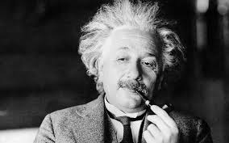

Life is like riding a bicycle.
To keep your balance, you must keep moving.
- Albert Einstein
To keep your balance, you must keep moving.
- Albert Einstein
Patent Office job: After graduating from college in 1902, Einstein
had trouble securing a position in academia. He eventually managed to
secure a position as a clerk at the Berne Swiss Patent Office. He had
plenty of time with this job to reflect and investigate his scientific
theories, which ultimately resulted in his contributions to
physics.
Theory of relativity: While working at the Patent Office, Einstein
created the theory of relativity, which completely changed how we
think about space and time. This theory was the result of many years
of research and contemplation, and it made Einstein one of the most
significant scientists in history.
Emigration to the United States: To avoid Nazi persecution, Albert
Einstein immigrated to the United States in 1933. In the Institute for
Advanced Study in Princeton, New Jersey, he made his home and
continued his scientific studies. He was able to continue his research
and contribute significantly to physics and other subjects as a result
of this change.
Nobel prize: Einstein received the Nobel Prize in Physics in 1921 for
his contributions to the growth of the photoelectric effect and for
his work in theoretical physics. This honour solidified his standing
as one of the most significant scientists of his era and guaranteed
his legacy.
In my free time I love to:
Writing poetry
Solving puzzles
Collecting stamps
Travelling.
Sculpting
Play violin

These are some of my most recognized published scientific
papers